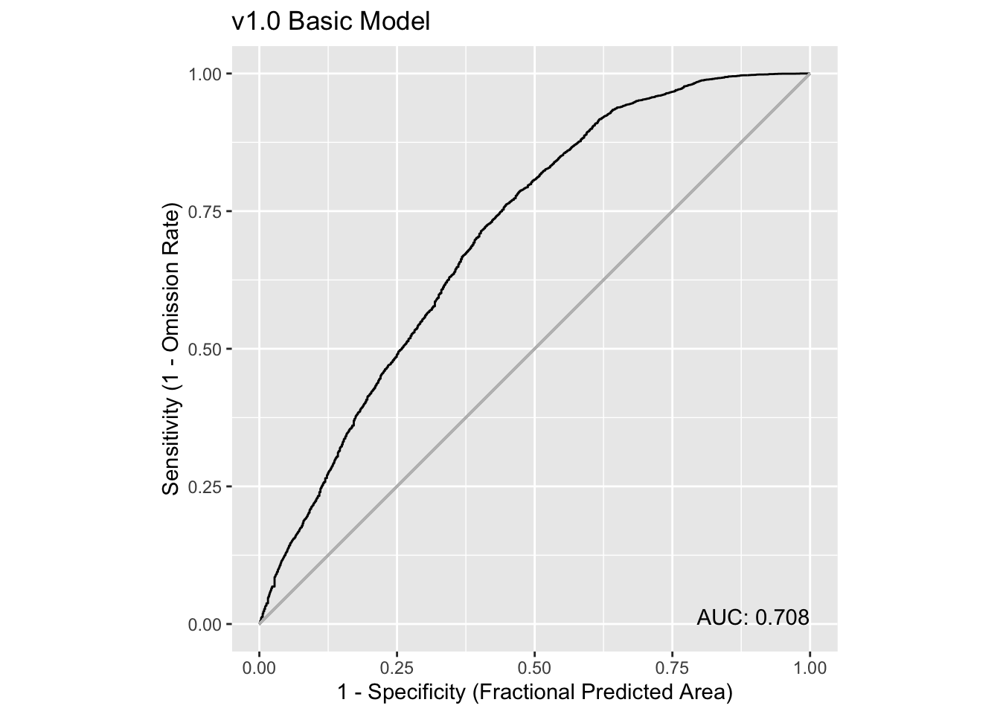

source("setup.R")
obs = sf::read_sf(file.path("data", "obs", "obs-covariates.gpkg")) |>
sf::st_set_geometry("geometry") |>
dplyr::mutate(month = factor(format(month_id, "%b"), levels = month.abb),
.before = geometry)
bkg = sf::read_sf(file.path("data", "bkg", "bkg-covariates.gpkg")) |>
sf::st_set_geometry("geometry") |>
dplyr::mutate(month = factor(format(month_id, "%b"), levels = month.abb),
.before = geometry)Basic modeling
So at this point we have point data for observation and background that have been joined with common environmental covariates (aka predictors). Here we show the basic steps taken to prepare, build and assess a model. Later, we’ll try more sophisticated modeling, such as modeling by month or splitting the data into training-testing groups.
1 Load data
Here we load the observation and background data points. We add a column identifying the month of the year.
2 Prepare the input data
The input data must be formed as two parts:
a plain (non-spatial) table of covariates for both observation and background free of missing data
a vector indicating which rows in the table are observations and which are background
2.1 The input table
Simply strip the spatial information off of obs and bkg, select just the environmental covariates, and then row bind them together
input_obs = obs |>
sf::st_drop_geometry() |>
dplyr::select(dplyr::all_of(c("sst", "u_wind", "v_wind"))) |>
na.omit(s)
input_bkg = bkg |>
sf::st_drop_geometry() |>
dplyr::select(dplyr::all_of(c("sst", "u_wind", "v_wind"))) |>
na.omit()
input_table = dplyr::bind_rows(input_obs, input_bkg)2.2 The input vector
The each element of the input vector must have a 1 for each observation row, and a 0 for each background row. Since we arranged to have all of the the observations come first, we can easily make the vector with two calls to rep().
input_vector = c( rep(1, nrow(input_obs)), rep(0, nrow(input_bkg)) )3 Build the model
Here we pass our inputs to the maxnet() function, leaving all of the optional arguments to the default values. Be sure to look over the docs for model construction - try ?maxnet
model = maxnet::maxnet(input_vector, input_table)That’s it. The returned object is of maxnet class; it’s essentially a list with all of the pertinent information required for subsequent use.
4 Assess the model
So what do we know about the model? Is it any good?
One thing we can do is to plot what are called response curves. These show, for each parameter, how the model responds along the typical range of parameter values. We plot below the responses with type cloglog which transform the response value into the 0-1 range.
plot(model, type = "cloglog")
Let’s take a closer look starting with sst. The model has peak response to sst in the range (approximately) 12C-17C. u_wind shows peak model response in near calm (<5m/s) speeds, but interestingly westward winds are more favorable for observation than eastward winds. The north-south component of wind, v_wind doesn’t seem to have strong discriminating power except for hint of distinctive response in near calm conditions.
We can do more if we make a prediction, but, first, let’s save the model to file so we can retrieve it later.
5 Save the model
In this tutorial we are going to build three types of models: basic, monthly and split (between testing and training). We should organize the storage of the models in a way that makes sense. With each model we may generate one or more predictions - for example, for our basic model we might tyr to hind-cast a individual years. That’s a one-to-many to relationship between model and predictions. We suggest that you start considering each model a version and store them accordingly. Let’s use a simple numbering scheme…
v1.0for the basic modelv2.jan, v2.feb, ..., v2.decfor the monthly modelsv3.0, ...for for the split model(s)
The maxnetic provides some convenience functions for working with maxnet models including file storage functions.
v1_path = file.path("data", "model", "v1", "v1.0")
ok = dir.create(v1_path, recursive = TRUE, showWarnings = FALSE)
maxnetic::write_maxnet(model, file.path(v1_path, "model_v1.0.rds"))6 Make a prediction
Now we can make predictions with our basic model. We’ll do it two ways. First by simply feeding the input data used to create the model into the prediction. This might seems a bit circular, but it is perfectly reasonable to see how the model does on already labeled data. Second we’ll make a prediction for each month in 2020 using raster data.
6.1 Predict with a data frame
Here we provide a data frame, in our case the original input data, to the predict() function with type cloglog which transform the response value into the 0-1 range.
prediction = predict(model, input_table, type = 'cloglog')
hist(prediction, xlab = "prediction", main = "Basic Model")
6.1.1 How did it do?
We can use some utilities in the maxnetic package to help us assess the model. First, we need to create a table with two columns: label and pred. Label is the simple a vector of 0/1 indicating that the predicted value is known to be either background or presence. We already have that in our input_vector. Pred is simple the 0-1 scale predicted value. Once we have that we can craft a receiver operator characteristic curve and compute it’s AUC.
x = dplyr::tibble(label = input_vector, pred = as.vector(prediction))
plot_ROC(x, title = "v1.0 Basic Model")
Overall, this is telling us that the model isn’t especially strong as a prediction tool, but it is much better than a 50-50 guess (that’s when AUC is close to 0.5, and the curve follows the light grey line). Learn more about ROC and AUC here.
6.2 Predict with rasters
We can also predict using raster inputs using our basic model. Let’s read in rasters for each month of 2018, and then run a prediction for each month.
dates = as.Date(c("2019-01-01", "2019-12-31"))
sst_path = "data/oisst"
sst_db = oisster::read_database(sst_path) |>
dplyr::arrange(date) |>
dplyr::filter(dplyr::between(date, dates[1], dates[2]))
sst = sst_db |>
oisster::compose_filename(path = sst_path) |>
stars::read_stars(along = list(time = sst_db$date)) |>
rlang::set_names("sst")|>
st_to_180()
wind_path = "data/nbs"
wind_db = nbs::read_database(wind_path) |>
dplyr::arrange(date)|>
dplyr::filter(dplyr::between(date, dates[1], dates[2]))
u_wind_db = wind_db |>
dplyr::filter(param == "u_wind")|>
dplyr::filter(dplyr::between(date, dates[1], dates[2]))
u_wind = u_wind_db |>
nbs::compose_filename(path = wind_path) |>
stars::read_stars(along = list(time = u_wind_db$date)) |>
rlang::set_names("u_wind") |>
st_to_180()
v_wind_db = wind_db |>
dplyr::filter(param == "v_wind")|>
dplyr::filter(dplyr::between(date, dates[1], dates[2]))
v_wind = v_wind_db |>
nbs::compose_filename(path = wind_path) |>
stars::read_stars(along = list(time = v_wind_db$date)) |>
rlang::set_names("v_wind") |>
st_to_180()Once we have them in hand we need to bind them together. But we need to attend to common but important issue. The sst rasters and windspeed rasters have different extents. We can’t bind them together until we warp one set to match the other. Let’s warp sst to match u_wind. And then we can bind them together.
sst_warped = stars::st_warp(sst, u_wind)
x = list(sst_warped, u_wind, v_wind)
predictors = do.call(c, append(x, list(along = NA_integer_)))
predictorsstars object with 3 dimensions and 3 attributes
attribute(s):
Min. 1st Qu. Median Mean 3rd Qu. Max. NA's
sst -1.558928 12.528449 19.5220385 17.6005908 23.501083 29.216452 11352
u_wind -2.692028 1.144244 2.7007004 2.7228278 4.115177 13.148120 7612
v_wind -5.431324 -1.411349 -0.3202622 -0.1398384 1.106175 4.636874 7612
dimension(s):
from to offset delta refsys point values x/y
x 1 74 -76.38 0.25 WGS 84 FALSE NULL [x]
y 1 46 46.12 -0.25 WGS 84 FALSE NULL [y]
time 1 12 NA NA Date NA 2019-01-01,...,2019-12-01 Now we can run the prediction.
pred = predict(model, predictors, type = 'cloglog')
predstars object with 3 dimensions and 1 attribute
attribute(s):
Min. 1st Qu. Median Mean 3rd Qu. Max. NA's
pred 0.0001196393 0.1200618 0.2675931 0.3033565 0.4398977 0.8816952 11487
dimension(s):
from to offset delta refsys point values x/y
x 1 74 -76.38 0.25 WGS 84 FALSE NULL [x]
y 1 46 46.12 -0.25 WGS 84 FALSE NULL [y]
time 1 12 NA NA Date NA 2019-01-01,...,2019-12-01 Since we get a spatially mapped prediction back, we can plot it.
coast = rnaturalearth::ne_coastline(scale = 'large', returnclass = 'sf') |>
sf::st_crop(pred)Warning: attribute variables are assumed to be spatially constant throughout
all geometriesplot_coast = function() {
plot(sf::st_geometry(coast), col = 'green', add = TRUE)
}
plot(pred, hook = plot_coast)Well, that certainly looks appealing with higher likelihood of near shore observations occurring during the warmer months.
6.2.1 How did it do?
To compute an ROC and AUC for each month, we have a little bit of work to do. We need to extract the observations and background for each month from the prediction maps. These we can then pass to the plot_ROC() function.
Note
We have to modify the date for each point to be the first date of each month. That’s because our predictors are monthlies.
test_obs = obs |>
dplyr::filter(dplyr::between(date, dates[1], dates[2])) |>
dplyr::select(dplyr::all_of("date")) |>
dplyr::mutate(date = oisster::current_month(date))
test_bkg = bkg |>
dplyr::filter(dplyr::between(date, dates[1], dates[2])) |>
dplyr::select(dplyr::all_of("date")) |>
dplyr::mutate(date = oisster::current_month(date))
test_input = dplyr::bind_rows(test_obs, test_bkg)
x = stars::st_extract(pred, test_input, time_column = 'date') |>
print()Simple feature collection with 1537 features and 3 fields
Geometry type: POINT
Dimension: XY
Bounding box: xmin: -75.99915 ymin: 35.01635 xmax: -58.83057 ymax: 45.95233
Geodetic CRS: WGS 84
First 10 features:
pred time date geometry
1 0.2759255 2019-05-01 2019-05-01 POINT (-67.32935 40.42509)
2 0.7245142 2019-03-01 2019-03-01 POINT (-74.41057 36.49908)
3 0.6664676 2019-12-01 2019-12-01 POINT (-75.3994 35.9457)
4 0.4536477 2019-06-01 2019-06-01 POINT (-75.10864 36.94806)
5 0.6864945 2019-04-01 2019-04-01 POINT (-74.49892 36.57275)
6 0.3105710 2019-09-01 2019-09-01 POINT (-75.5519 36.1854)
7 0.3874695 2019-09-01 2019-09-01 POINT (-73.6245 40.3317)
8 0.3785449 2019-04-01 2019-04-01 POINT (-69.04389 39.82132)
9 0.7447747 2019-04-01 2019-04-01 POINT (-74.59436 36.87291)
10 0.7447747 2019-04-01 2019-04-01 POINT (-74.45753 36.72279)Finally we can build a table that merges the prediction with the labels. We are going to add the name of the month to group by that.
y = x |>
dplyr::mutate(label = c(rep(1, nrow(test_obs)), rep(0, nrow(test_bkg))),
month = factor(format(date, "%b"), levels = month.abb),
.before = 2) |>
sf::st_drop_geometry() |>
dplyr::select(dplyr::all_of(c("month", "label", "pred"))) |>
dplyr::group_by(month)
dplyr::count(y, month, label) |>
print(n = 24)# A tibble: 24 × 3
# Groups: month [12]
month label n
<fct> <dbl> <int>
1 Jan 0 36
2 Jan 1 21
3 Feb 0 15
4 Feb 1 7
5 Mar 0 46
6 Mar 1 23
7 Apr 0 259
8 Apr 1 169
9 May 0 182
10 May 1 119
11 Jun 0 73
12 Jun 1 53
13 Jul 0 76
14 Jul 1 48
15 Aug 0 46
16 Aug 1 39
17 Sep 0 48
18 Sep 1 21
19 Oct 0 102
20 Oct 1 79
21 Nov 0 27
22 Nov 1 19
23 Dec 0 15
24 Dec 1 14Now how about one ROC plot for each month? Yikes! This requires a iterative approach, using group_map(), to compute the ROC for each month. We then follow with plot wrapping by the patchwork package.
rocs = dplyr::group_map(y,
function(tbl, key){
maxnetic::plot_ROC(tbl, title = sprintf("%s, n = %i", key$month, nrow(tbl)),
xlab = "", ylab = "")
})
patchwork::wrap_plots(rocs, ncol = 4)
Hmmm. That’s surprising, yes? Why during the summer months does our AUC go down. In fact, at times we are predicting the likelihood of not having an observation reported. It’s hard to know what to think, but consider that we are using a model generated across all months of multiple years and it might not predict a particular month and year very well. A step toward refinement, our next step is to make 12 models, one for each month.